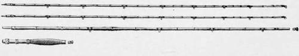
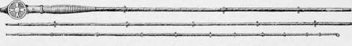
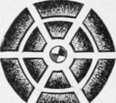
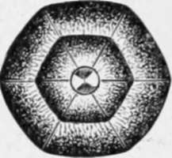
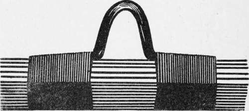
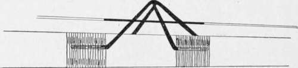

The Fishing-Rod, And Its Amateur Manufacture. Part 2
Description
This section is from the book "American Game Fishes", by W. A. Perry. Also available from Amazon: American Game Fishes: Their Habits, Habitat, and Peculiarities; How, When, and Where to Angle for Them.
The Fishing-Rod, And Its Amateur Manufacture. Part 2
Rods for Mid-water Fishing, such as troll-ng, fishing with live bait, etc., need to be of "ather sterner character. For Bass-fishing, Dr. Elenshall recommended an eight-foot three-inch *od of eight ounces, made of ash-butt; lance-vood tip and second joint. For my own part I Drefer one rather longer, but this is a matter of ;hoice. The ten-foot two-joint rod (Chubb's) ig. 4, with reversible hand-grip, is to me a splendidly efficient weapon. By the way, this land-grip is a good idea. It allows of the reel )eing below or above the hand, and one can :ast from the reel or not, according to choice.
Of course the short, strongly built Tarpon and Vlascalonge rods are "horses of a different color" to the above. I have one made of greenheart from an old ship's knees or ribs, which weighs 28 ounces, and is but twelve feet long-but oh! the strength! It is capable of helping a man out of the water without straining, and is finely trimmed, and in everything good for its purpose-catching big fish and killing them quietly; and if one needs a boat-pole, on an emergency, he has just the implement handy.
Fig. 4.
Not only has the? vegetable kingdom been laid under contribution for material in the manufacture of rods, but also the mineral. Naturally, steel has come in for a share of attention. Forty years ago old Giles Little, of Fetter Lane, London-an enthusiastic fisherman and tackle-maker- made a steel rod. It was simply a tapered steel-spring, with a swelled butt or handle, and was light and exceedingly powerful. I saw it and handled it, in 1879, and thought then that the time was not far distant when a really efficient jointed-rod of steel would be introduced to anglers.
The thought is realized in the steel rod produced by the Horton Steel-rod Co., and I have had the advantage and pleasure of testing one of these rods with great severity. First, I may premise that the ten-foot fly-rods will lift a dead weight of ten pounds-there is no wood-rod fit for flyfishing that will do that-and in practical fishing they are unbreakable, and as far as I have gone they don't rust. They are made from fine sheet-steel, in tubes, not brazed but brought round together without actual juncture. Some of these rods are telescopic, and act very satisfactorily, if a fine line be used; but a thick line is apt to cling to the large surface of contact, because it runs through the interior of the rod. These rods are, however, now made with guides outside, and the improvement makes an extremely useful rod for rough usage-camping, etc. The temper of the steel is excellent, as it of course must be to be of any use.
Other rods of whalebone-which trenches on the animal kingdom for material-made like a whip with braiding, have been tried, and I myself once endeavored-and shall do so again-to produce a rod of steel and vulcanite; but the split cane, as yet, is triumphant over all its competitors.
There are some pretty rods made, both in England and this country, with metal centers. The "Foster" rod is steel-centered, and the "Hardy" rod (both English) is not only steel-centered but "built up," as it is termed, of bamboo. Fig. 5 shows the "Foster," with its guides on both sides and its reel at the end; and fig. 6 indicates the process of "building up" practiced by Hardy Bros.
Another capitally made rod is the built-up rod of Edwards (Hancock, Del. Co., N. Y.). It is substantially similar to that of Hardy, except that it does not contain the steel core. For my own parti don't want the steel core. This maker says: "I have, for about ten years, made the single enamel, split-bamboo rods. During this time I have used nearly all kinds of ferrules to prevent their breaking off at the ferrules. Finding this was a failure, generally, as the bamboo was strong only on the outside-the inside being at the best very poor-the idea occurred to me to plane away as much of the inside as was poor, and glue another piece of enamel in its place, thereby making the whole rod out of enamel. It takes forty-eight pieces or strips to make a rod with two tips."
A brief glance at the most desirable trimmings -rings or guides, ferrules, reel-plates, etc., is now in order. They have gone through as many vicissitudes as the rods, and are now so improved as to be practically perfect. There are, however, many old-fashioned arrangements on the market, and I make the following remarks to inform the reader of the best out of these. Nothing is so objectionable as a good rod with bad trimmings- it is like a beautiful woman in tinsel and tawdry finery instead of real jewels and good dress.
Fig- 5. New Steel Centered Fiyirod.
First, as to guides or rings: these have to receive and allow the line to pass through them, and the minimum of friction is a desideratum. There also should be no possibility of entanglement. This being so, I can find no better ring than that shown in fig. 7. It can of course be made in all sizes ; it is simple and lasting.
For a butt-ring on the Bass casting rod, I know of no better one than that shown at fig. 8. It allows the line to pass through without confining it unduly, which is most necessary for long casting. The simplicity of this arrangement is obvious. It simply consists of two loops of wire tied on in juxtaposition as shown, and touched with hard solder at their points of meeting. It is a device of my own, and exceedingly practicable. Of course it can be varied as to size, etc.
Fig. 6.-Before cementing.
Fig. 6.-After cementing.
Fig. 7.
Fig. 8.
Continue to:
- prev: The Fishing-Rod, And Its Amateur Manufacture
- Table of Contents
- next: The Fishing-Rod, And Its Amateur Manufacture. Part 3